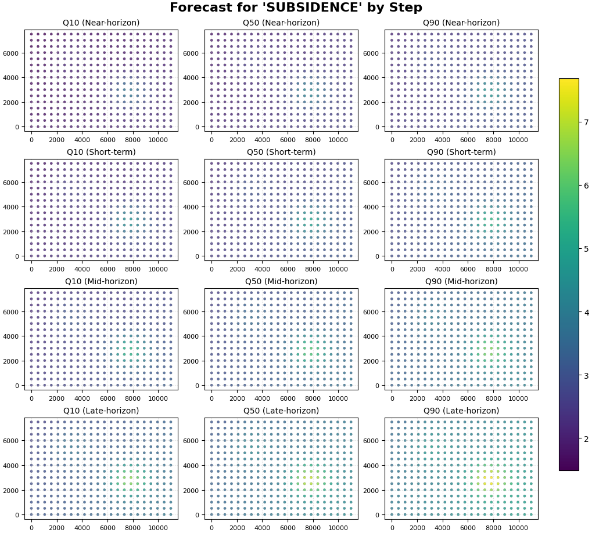
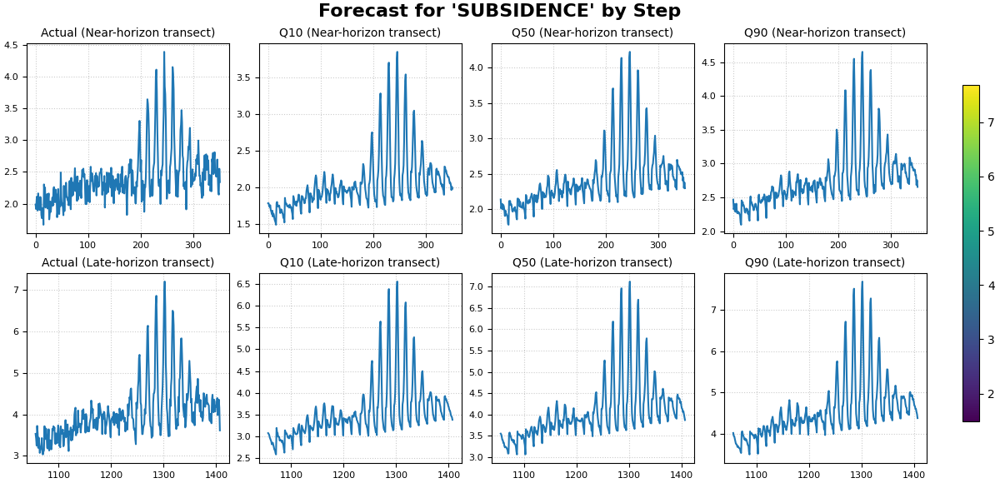

Note
Go to the end to download the full example code.
Forecast by horizon step with plot_forecast_by_step#
This lesson teaches how to inspect forecasts step-by-step
with geoprior.plot.plot_forecast_by_step().
Why this figure matters#
The previous forecasting lessons answered two important questions:
plot_forecasts: how do individual samples evolve through the horizon?forecast_view: what do forecast fields look like across space for each year?plot_eval_future: how should holdout validation be separated from future projection?
This lesson asks a different question:
What changes from one forecast step to the next, and how can we inspect those changes directly?
That is the role of plot_forecast_by_step.
The function is designed for a long-format forecast table where
each row is one sample at one horizon step, and it builds a grid
whose rows correspond to forecast_step values. It supports
spatial scatter plots when coordinate columns are available, and it
falls back to line plots when they are not. That makes it especially
useful for horizon-wise diagnostics and for deterministic or nearly
deterministic forecasts.
What this lesson teaches#
We will:
build a compact synthetic long-format forecast table,
inspect how the forecast changes with step,
render a spatial step-by-step view,
render a line-based step-by-step comparison,
learn how to read rows and columns in the figure,
connect the visual story to a small numerical summary.
The lesson uses synthetic data so it stays fully executable during the documentation build.
Imports#
We use the real public plotting backend.
from __future__ import annotations
import numpy as np
import pandas as pd
from geoprior.plot import plot_forecast_by_step
Step 1 - Build a compact long-format forecast table#
plot_forecast_by_step expects a long-format DataFrame with a
forecast_step column and one or more value columns such as
subsidence_q50 or subsidence_actual.
We build a synthetic spatial grid and create four forecast steps. The synthetic behavior is chosen so the figure remains easy to read:
the median forecast increases with horizon,
the uncertainty widens with horizon,
one main hotspot persists through time,
actual values stay close to the median but are not identical.
rng = np.random.default_rng(101)
nx = 22
ny = 16
steps = [1, 2, 3, 4]
xv = np.linspace(0.0, 11_000.0, nx)
yv = np.linspace(0.0, 7_500.0, ny)
X, Y = np.meshgrid(xv, yv)
x_flat = X.ravel()
y_flat = Y.ravel()
n_sites = x_flat.size
xn = (x_flat - x_flat.min()) / (x_flat.max() - x_flat.min())
yn = (y_flat - y_flat.min()) / (y_flat.max() - y_flat.min())
base_hotspot = np.exp(
-(
((xn - 0.70) ** 2) / 0.020
+ ((yn - 0.38) ** 2) / 0.030
)
)
secondary_zone = 0.55 * np.exp(
-(
((xn - 0.28) ** 2) / 0.028
+ ((yn - 0.74) ** 2) / 0.050
)
)
regional_gradient = 0.42 * xn + 0.24 * (1.0 - yn)
rows: list[dict[str, float | int]] = []
for step in steps:
lead_scale = {
1: 1.00,
2: 1.18,
3: 1.40,
4: 1.68,
}[step]
# Step-specific median field
q50 = (
1.8
+ 1.3 * regional_gradient
+ 1.9 * base_hotspot
+ 0.9 * secondary_zone
) * lead_scale
# Wider intervals at later steps
width = (
0.26
+ 0.08 * xn
+ 0.05 * base_hotspot
+ 0.05 * step
)
q10 = q50 - width + rng.normal(0.0, 0.02, size=n_sites)
q50 = q50 + rng.normal(0.0, 0.03, size=n_sites)
q90 = q50 + width + rng.normal(0.0, 0.02, size=n_sites)
actual = q50 + rng.normal(0.0, 0.14, size=n_sites)
for idx in range(n_sites):
rows.append(
{
"sample_idx": idx,
"forecast_step": step,
"coord_x": float(x_flat[idx]),
"coord_y": float(y_flat[idx]),
"subsidence_actual": float(actual[idx]),
"subsidence_q10": float(q10[idx]),
"subsidence_q50": float(q50[idx]),
"subsidence_q90": float(q90[idx]),
}
)
forecast_df = pd.DataFrame(rows)
print("Forecast table shape:", forecast_df.shape)
print("")
print(forecast_df.head(10).to_string(index=False))
Forecast table shape: (1408, 8)
sample_idx forecast_step coord_x coord_y subsidence_actual subsidence_q10 subsidence_q50 subsidence_q90
0 1 0.000000 0.0 1.984778 1.786197 2.139941 2.465552
1 1 523.809524 0.0 2.302918 1.783499 2.117073 2.454613
2 1 1047.619048 0.0 2.095845 1.858450 2.152022 2.447802
3 1 1571.428571 0.0 2.491044 1.883462 2.204720 2.514711
4 1 2095.238095 0.0 2.307384 1.884575 2.207410 2.512587
5 1 2619.047619 0.0 2.427864 1.920307 2.246132 2.571798
6 1 3142.857143 0.0 2.001273 1.969362 2.236208 2.550678
7 1 3666.666667 0.0 2.251816 1.978575 2.239343 2.557537
8 1 4190.476190 0.0 2.329867 1.993775 2.392963 2.759211
9 1 4714.285714 0.0 2.564747 2.015851 2.351510 2.714493
Step 2 - Inspect the table by forecast step#
Before plotting, it helps to summarize how the forecast evolves from one step to the next.
We track:
mean actual value,
mean q50,
mean interval width.
This gives a compact horizon-wise summary of the same story we will inspect visually.
forecast_df["interval_width"] = (
forecast_df["subsidence_q90"] - forecast_df["subsidence_q10"]
)
step_summary = (
forecast_df.groupby("forecast_step")
.agg(
n_pixels=("sample_idx", "size"),
mean_actual=("subsidence_actual", "mean"),
mean_q10=("subsidence_q10", "mean"),
mean_q50=("subsidence_q50", "mean"),
mean_q90=("subsidence_q90", "mean"),
mean_width=("interval_width", "mean"),
)
.reset_index()
)
print("")
print("Step summary")
print(step_summary.to_string(index=False))
Step summary
forecast_step n_pixels mean_actual mean_q10 mean_q50 mean_q90 mean_width
1 352 2.409406 2.055172 2.409893 2.761066 0.705894
2 352 2.844622 2.440197 2.844835 3.248047 0.807850
3 352 3.381102 2.920137 3.373840 3.826318 0.906182
4 352 4.053893 3.544363 4.047403 4.552425 1.008062
Step 3 - Render the spatial step-by-step figure#
This is the most characteristic use of plot_forecast_by_step.
We set:
kind="spatial"value_prefixes=["subsidence"]spatial_cols=("coord_x", "coord_y")
The function will create:
one row per forecast step,
one column per forecast metric (q10 / q50 / q90),
a shared color scale because we use
cbar="uniform".
This view is ideal when the main question is:
how does the spatial field change from one lead time to the next?
plot_forecast_by_step(
df=forecast_df,
value_prefixes=["subsidence"],
kind="spatial",
steps=[1, 2, 3, 4],
step_names={
1: "Near-horizon",
2: "Short-term",
3: "Mid-horizon",
4: "Late-horizon",
},
spatial_cols=("coord_x", "coord_y"),
cmap="viridis",
cbar="uniform",
axis_off=False,
show_grid=True,
grid_props={"linestyle": ":", "alpha": 0.45},
figsize=(10.2, 9.2),
verbose=0,
)

How to read the spatial step-by-step figure#
Read the rows first#
Each row corresponds to one forecast_step.
The row-level question is:
how does the predicted field evolve as the horizon advances?
In this synthetic lesson, later steps should generally show:
stronger median values,
wider plausible range,
a hotspot that stays in roughly the same place but intensifies.
Read the columns second#
Each column corresponds to a forecast metric:
q10: lower scenario,
q50: central scenario,
q90: upper scenario.
The column-level question is:
how much uncertainty surrounds the central forecast at each step?
Why uniform color scaling matters#
Because all panels share one color scale, comparisons across rows and columns remain honest:
brighter colors at Step 4 really indicate larger forecast values than the same colors at Step 1,
apparent changes are not caused by per-panel rescaling.
Step 4 - Render the line-based comparison view#
plot_forecast_by_step can also fall back to line plots.
This is useful when:
you want a compact transect-style comparison,
or when no spatial columns are available.
Since the fallback line plot uses the DataFrame index on the x-axis,
we first sort each step by coord_x. That way, the line view acts
like an ordered left-to-right transect through space.
transect_df = (
forecast_df.sort_values(
["forecast_step", "coord_x", "coord_y"]
)
.reset_index(drop=True)
)
plot_forecast_by_step(
df=transect_df,
value_prefixes=["subsidence"],
kind="dual",
steps=[1, 4],
step_names={
1: "Near-horizon transect",
4: "Late-horizon transect",
},
spatial_cols=None,
max_cols="auto",
cmap="viridis",
cbar="uniform",
axis_off=False,
show_grid=True,
grid_props={"linestyle": ":", "alpha": 0.65},
figsize=(12.0, 5.8),
verbose=0,
)

How to read the line-based view#
The line view is not the same as a time-series plot over calendar time. Here, each row is still a forecast step, but the x-axis is simply the DataFrame order.
Because we sorted by coord_x first, the line now behaves like a
horizontal spatial transect.
This view is useful for questions such as:
does the median prediction track the actual signal shape?
are the intervals too narrow or too wide along the transect?
how much stronger is Step 4 than Step 1?
Step 5 - Add a small step-wise comparison table#
A robust lesson usually combines the figure with a small numerical summary.
We compute:
MAE of q50 against actual by step,
empirical coverage of the [q10, q90] interval by step,
fraction of pixels whose q50 exceeds a chosen threshold.
threshold = 5.0
metric_rows: list[dict[str, float | int]] = []
for step, sub in forecast_df.groupby("forecast_step", sort=True):
mae_q50 = np.mean(
np.abs(sub["subsidence_q50"] - sub["subsidence_actual"])
)
coverage_10_90 = np.mean(
(
sub["subsidence_actual"] >= sub["subsidence_q10"]
)
& (
sub["subsidence_actual"] <= sub["subsidence_q90"]
)
)
share_above = np.mean(sub["subsidence_q50"] > threshold)
metric_rows.append(
{
"forecast_step": int(step),
"mae_q50_vs_actual": float(mae_q50),
"coverage_q10_q90": float(coverage_10_90),
"share_q50_above_threshold": float(share_above),
}
)
metric_table = pd.DataFrame(metric_rows)
print("")
print("Step-wise evaluation summary")
print(metric_table.to_string(index=False))
Step-wise evaluation summary
forecast_step mae_q50_vs_actual coverage_q10_q90 share_q50_above_threshold
1 0.114104 0.991477 0.000000
2 0.112644 1.000000 0.000000
3 0.107011 0.997159 0.036932
4 0.114216 0.997159 0.082386
How to interpret this table#
These numbers help anchor the visual reading:
mae_q50_vs_actual: how close the central forecast is to the observed holdout values;coverage_q10_q90: how often the observed value falls inside the interval;share_q50_above_threshold: how the high-response footprint changes with lead time.
In this synthetic lesson, later steps should generally show:
larger median values,
a larger share of pixels above the threshold,
wider intervals.
Step 6 - Practical interpretation guide#
plot_forecast_by_step is especially useful when the forecast
question is inherently horizon-wise.
Use it when you want to ask:
what changes most from Step 1 to Step 2?
does the hotspot intensify steadily through the horizon?
are later steps substantially more uncertain?
does the spatial footprint expand as lead time increases?
This is why the function complements the earlier forecasting pages:
plot_forecastsis more sample-centric,forecast_viewis more year-centric,plot_eval_futureis more split-centric,plot_forecast_by_stepis explicitly horizon-centric.
Step 7 - When this page is most useful#
This lesson becomes especially valuable in two situations:
Deterministic forecasts When there are no quantile columns, a step-by-step view is often the clearest way to inspect the predicted field.
Horizon diagnostics Even for probabilistic forecasts, this page is often the fastest way to see whether uncertainty or hotspot structure changes smoothly from one step to the next.
So this page should be read as the advanced quick-look diagnostic of the forecasting gallery.
Total running time of the script: (0 minutes 3.306 seconds)